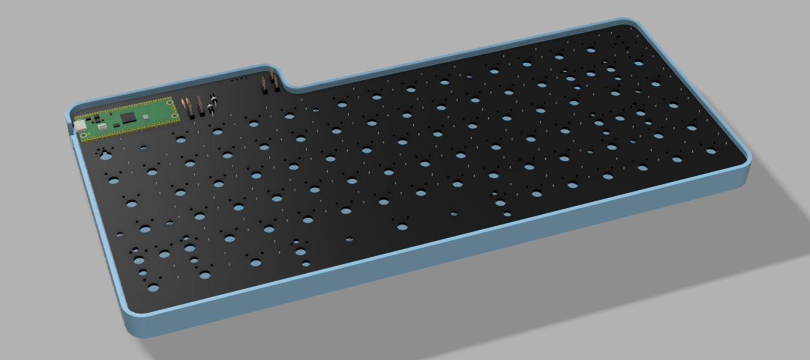
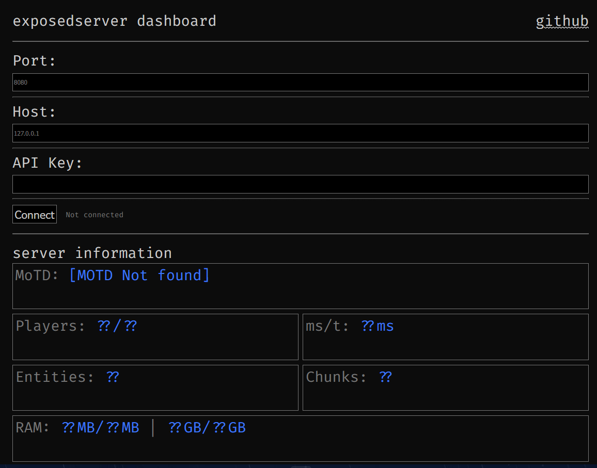

welcome to nimit's site!
i might post stuff here. sometimes that stuff might actually work
lpkbv1 - my first low profile, wireless keyboard
This time, for Hack Club Blueprint, I wanted to make a keyboard that had features I had never experimented in the past with. I have worked with RGB, adding an OLED, Complete QMK-Vial support, yet I wanted the challenge of something new. This time, I could've either made a Split keyboard, or something different. I prefer my keyboards staggered, and the idea of using a split or olkb freaks me out. That's why this time, I decided to make a low profile wireless keyboard. The keyboard itself is quite simple. It has a 4000mAh battery, which should hypothetically last around 40hrs of use with BLE. Like my previous designs, it's built on the Raspberry Pi Pico, which I am definitely not short of. The RP2040 chip has served me quite consistently, and is extremely easy to code for in almost all major firmwares. I plan on using KMK for this design rather than QMK like my previous designs. This is mainly because QMK kind of sucks when combined with a wireless keyboard, especially since it doesn't even support the Pico W's BLE capability. KMK however, is built on Circuitpython and has vast support for basically anything I want to do. The OLED on the keyboard is also a necessity this time, since I need to know the battery percentage and the connection status without using any cables. The battery charges directly through VBUS with the flick of a switch, so I don't think there is any issue in that either. I am currently waiting on all the parts to arrive before I finish building this keyboard, so check back in a week or two!
exposedserver
exposedserver was my solution to minecraft server admin dashboards. I made it as a way to learn Java, server-side minecraft modding and websockets. The premise is simple: Get data, open websocket, stream data. Anyone with the mod installed could remotely connect to their server with that server's IP, the websocket port, and an access key. I don't plan on continuing development, as the need for the mod has been made redundant with the new built-in Server Management Protocol API, although I might revisit the idea and implement a GUI similar to the existing one.
